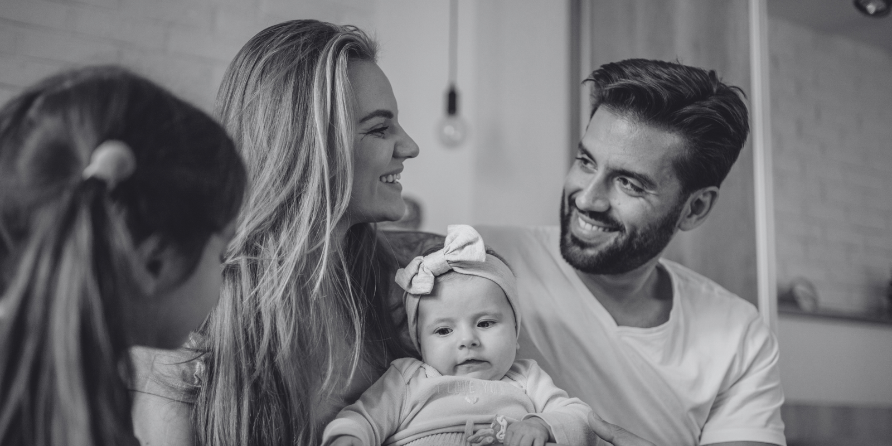
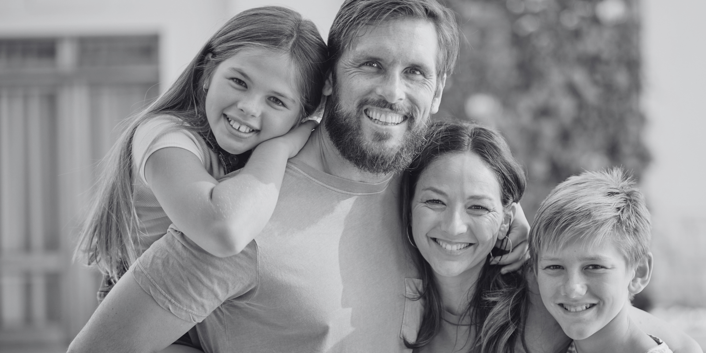

Implantología
Recuperamos piezas perdidas con planificación avanzada y resultados naturales.
- Implantes dentales
- Implantes de carga inmediata
- Implantes con poco hueso
- Rehabilitación completa All-on-X
- Implantes mínimamente invasivos
- Cirugía guiada 3D

Nuestras especialidades
Cada servicio nace de una atención personalizada. Escuchamos tus necesidades, estudiamos tu caso y te acompañamos con cercanía, transparencia y profesionalidad.
Recuperamos piezas perdidas con planificación avanzada y resultados naturales.
Corregimos la posición dental y la mordida con opciones adaptadas a cada edad.
Diseñamos sonrisas armónicas respetando la salud y la naturalidad.
Tratamos el interior del diente para aliviar el dolor y conservar piezas dañadas.
Cuidamos las encías y los tejidos que sostienen los dientes.
Procedimientos quirúrgicos seguros con planificación y acompañamiento.
Recuperamos funcionalidad y estética con prótesis de alta calidad.
Atención especializada para niños en un entorno tranquilo y de confianza.
Servicios complementarios para prevenir, diagnosticar y proteger tu sonrisa.
Preguntas frecuentes
Te explicamos cada opción para que puedas tomar decisiones con tranquilidad.
Trabajamos con técnicas actuales y medidas de confort para minimizar molestias durante y después del tratamiento.
La frecuencia depende de cada caso, aunque normalmente recomendamos revisiones periódicas para prevenir problemas.
Carillas, blanqueamiento, coronas, ortodoncia y rehabilitación oral son algunas opciones. Primero valoraremos tu salud dental.
Llámanos o escríbenos por WhatsApp para valorar tu situación y darte una respuesta lo antes posible.

Plan personalizado
Estudiaremos tu caso y te explicaremos cada alternativa con claridad.